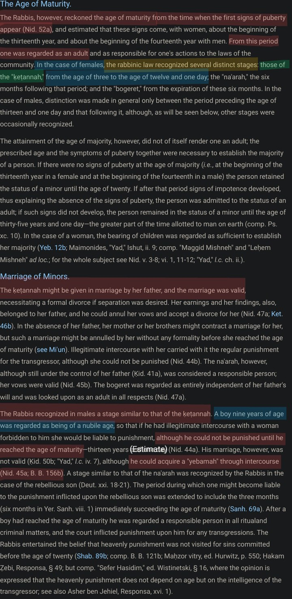
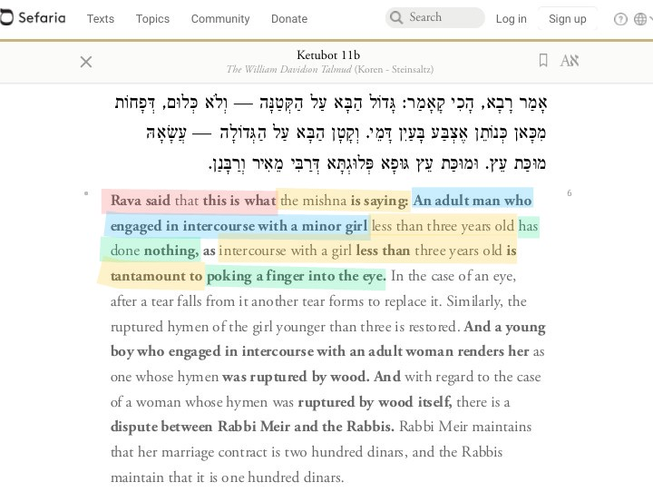
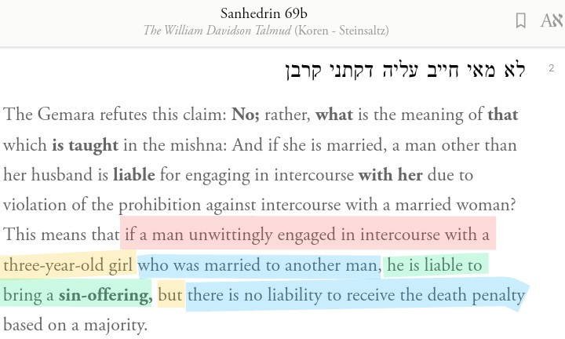
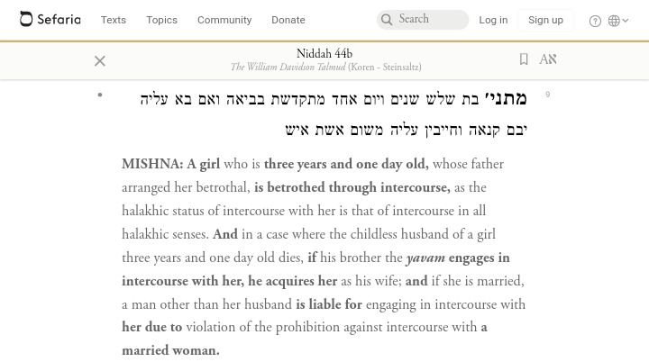
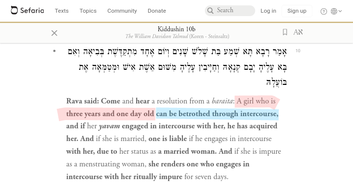
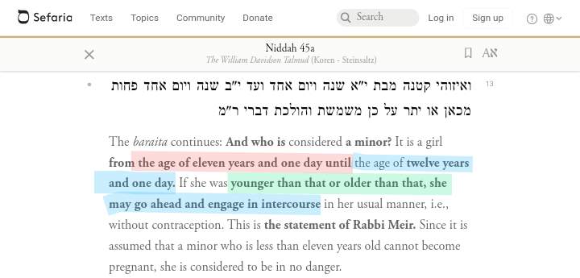

Torah corrupt?
https://www.scribd.com/document/498847810/The-Chains-of-Torah-Transmission-Proof-of-Preservation-or-Cunning-Concoction
https://zondervanacademic.com/blog/who-wrote-genesis
Zondervan Academic
Who Wrote the Book of Genesis?
Responses to the Jews by Karkooshy
https://keystotheunseen.com/2017/11/08/prophethood-of-muhammed/
https://keystotheunseen.com/2018/01/17/is-the-belief-in-muhammeds-prophethood-provisional/
Muslim/Jewish Discussion on Prophethood by Mohammad Hijab
https://www.youtube.com/watch?v=SA-ybFWiAo8
https://archive.org/details/28921238SilencingTheJews
Samau’al Al-Maghribī|Ifhām Al-Yahud-Silencing the Jews
Jews celebrate the annihilation of Haman and his sons, and the merciless and brutal killings of countless others.
Purim is a day where sins become ‘Mitzvot’ (Commandments). Children smoking is overlooked and intoxication is encouraged.
There is a longstanding custom of drinking wine at the feast. The custom stems from a statement in the Talmud attributed to a rabbi named Rava that says one should drink on Purim until he can "no longer distinguish between arur Haman ("Cursed is Haman") and baruch Mordechai ("Blessed is Mordecai")."
One should drink until he can’t even process what he is saying, according to the above text. ^
תַּנְיָא, אָמַר רַבִּי עֲקִיבָא: פַּעַם אַחַת נִכְנַסְתִּי אַחַר רַבִּי יְהוֹשֻׁעַ לְבֵית הַכִּסֵּא, וְלָמַדְתִּי מִמֶּנּוּ שְׁלֹשָׁה דְּבָרִים: לָמַדְתִּי שֶׁאֵין נִפְנִין מִזְרָח וּמַעֲרָב אֶלָּא צָפוֹן וְדָרוֹם, וְלָמַדְתִּי שֶׁאֵין נִפְרָעִין מְעוּמָּד אֶלָּא מְיוּשָּׁב, וְלָמַדְתִּי שֶׁאֵין מְקַנְּחִין בְּיָמִין אֶלָּא בִּשְׂמֹאל. אָמַר לוֹ בֶּן עַזַּאי: עַד כָּאן הֵעזת פניך ברבך?! אמר לו תורה היא, וללמוד אני צריך.
“It was taught in a baraita in tractate Derekh Eretz that Rabbi Akiva said: I once entered the bathroom after my teacher Rabbi Yehoshua, and I learned three things from observing his behavior: I learned that one should not defecate while facing east and west, but rather while facing north and south; I learned that one should not uncover himself while standing, but while sitting, in the interest of modesty; and I learned that one should not wipe with his right hand, but with his left. Ben Azzai, a student of Rabbi Akiva, said to him: You were impertinent to your teacher to that extent that you observed that much? He replied: It is Torah, and I must learn.”
— Talmud Bavli, Berakhot 62a
https://www.sefaria.org/Berakhot.62a?lang=bi
Everything Wrong With Judaism In 20 Mins
https://youtu.be/1j1-2rLaofA
00:00 #1: Making Idols
01:10 #2: Praying to the dead
02:05 #3: Calling an angel "Little YHWH"
02:33 #4: Worshipping their rabbis & Distorting the words from their right places
04:52 #5: Allowing magic
06:07 #6: Believing in superstition
07:49 #7 Racism
09:34 #8 Ascribing blasphemies to Allah (God)
11:02 #9 Immoral Jewish laws
12:25 #10 They don't have the books of the Prophets & they conceal the truth.
13:56 #11 Contradictions in their books
14:20 #12 Prophets CAN abrogate the laws
15:04 #13 Immorality in the Bible; killing babies!
15:20 #14 Bizarre theology in the Zohar
التوراة | مصطفى محمود
https://www.noor-book.com/%D9%83%D8%AA%D8%A7%D8%A8-%D8%A7%D9%84%D8%AA%D9%88%D8%B1%D8%A7%D8%A9-%D8%A7%D9%84%D9%83%D8%A7%D8%AA%D8%A8-%D9%85%D8%B5%D8%B7%D9%81%D9%89-%D9%85%D8%AD%D9%85%D9%88%D8%AF-pdf
https://www.youtube.com/playlist?list=PLcZ8qZCIkYKJRLkyTNoaIaxQhADTBpVVi
https://www.independent.co.uk/news/world/americas/herpes-babies-jewish-circumcision-ritual-link-rabbis-infants-a7620446.html
https://abcnews.go.com/Health/baby-dies-herpes-virus-ritual-circumcision-nyc-orthodox/story?id=15888618
Intercourse and marriage






https://www.youtube.com/watch?v=oPzjvmFZ1B4
YouTube
Shudraji Mleccha
Rabbi Mizrachi - Idol Worshippers Deserve Death Penalty